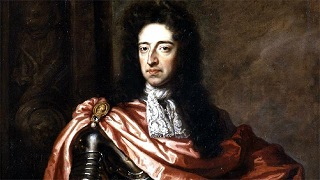
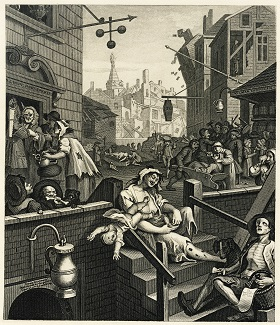
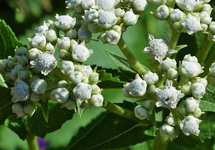

The origins of gin are traced back to the Netherlands in the 1200s. There, the drink was originally called Genever and was made by distilling malt wine to 50% Alcohol by Volume (ABV). Unfortunately, the taste of Genever was not particularly pleasant, so to make it drinkable, spices and herbs were added. Juniper Berries, specifically, the Common Juniper (juniper communius) was added for its supposed medical properties. The berry (while not actually being a berry, more it is a fleshy cone called a Galbulus) is the predominant flavor that you will taste in gin.
Genever was first exposed to English soldiers, when during the 80 Years war, they assisted the Dutch against the Spanish and consequently, brought back with them to England. Distillers in England began to distill their own version of genever, shortening the name to simply "Gin". When William the Orange, a prince from the Dutch Republic, became King of England in 1688, duties were raised on the import of brandy. This was in large part due to religious tensions, with the King of England being a Protestant and the King of France, Louise XIV, being a Catholic. Brandy had largly been one of Englands biggest imports, when by the 1680s, 2 million gallons a year were being imported.
Between 1690 and 1720, the English parliament heavily encouraged production of gin, largely to reduce consumption of Wine and Brandy from France. Gin eventually began to be seen as a patriotic drink, even if it failed to overtake beer consumption. Restrictions on distilling were reduced, allowing for almost anyone to commercially distill gin, provided required taxes were paid. In London and the surrounding area alone, there were 1,500 stills by 1736. By 1720, taxed production of gin was at 2.5 million gallons (9.46 million liters). Whether the reported figures were accurate or not, they did contribute toward moral anxiety on the amount being consumed.

The gin craze of the early 18th century, was based on the belief that gin was being abused by, not just men, but also by women and
children. The most famous imagery from this period, is William Hogarth's 1751 etching
Gin Lane, likely inspired by descriptions
during the period, that painted a bleak picture of Britain that was descending into a gin addicted choas. The first act of prohibition that the
goverment passed, was aimed at the retailers, raising duties thirtyfold, adding a 20 pound licencing fee and a 10 pound fine for selling it on
the streets. However, the act was repealed 4 years later, in 1733, because of the difficulty that the police were facing to enforce the law.
Up until the 1750s, multiple laws were enacted, each aiming to curb production and consumption of gin. These laws however, did nothing to dissuade the English population from consuming gin in record numbers, with 3.8 million gallons produced in 1730, 6.4 million gallons in 1735, with a record 8.2 million gallons produced, equivalent to more than a gallon per person for the English population at the time. Eventually, the gin craze subsided. This could have been largely in part due to less oppressing regulations or that grain shortages of the late 1750s led to distilling being banned to ensure food production could continue.
After the end of the gin craze, gin production and consumption declined heavily, with only the Gordon's brand of gin being the major distiller by the 1800s. With the invention of the column still in the late 1820s and early 30s, distilling became easier and cheaper than it had been. Gin distillers also began to turn around the public perception of gin, selling it in elaborate bars called Gin Palaces, that catered to exclusive clientele. Gin then began to be seen as a drink for members of high classes, much more different than what it had been only a hundred years ago. It also found a use out in tropical British colonies, where gin was used to make quinine more tolerable to ingest. Quinine, as well as being a effective anti-malaria compound, is used as a flavoring in tonic water, leading to the cocktail of a gin and tonic.
Gin continued to remain popular during this time, until the 1960s with the rising consumption of Vodka, and gin was seen as a drink for older generations. Gin experienced a comeback in 1999, with Hendricks Gin arriving onto the market and being credited for launching the craft gin wave.